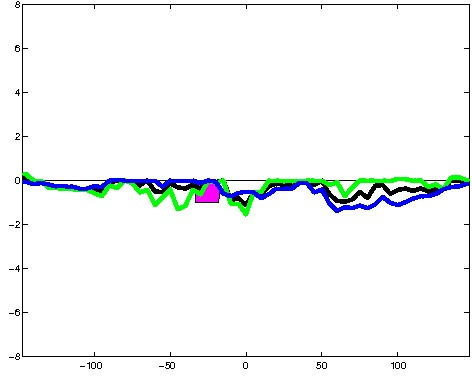
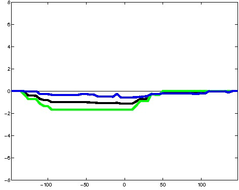
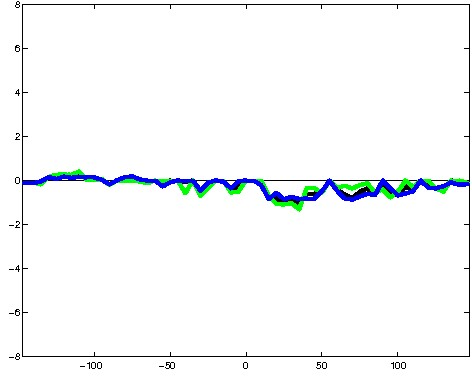
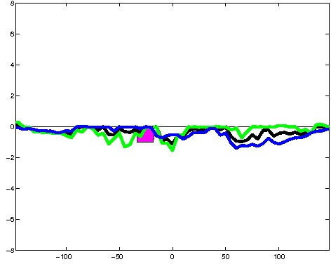
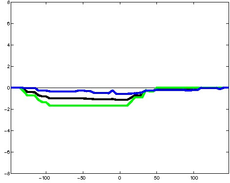
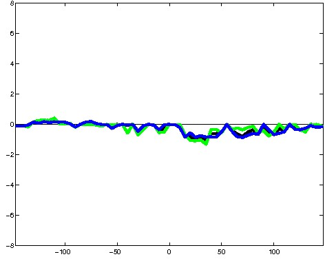
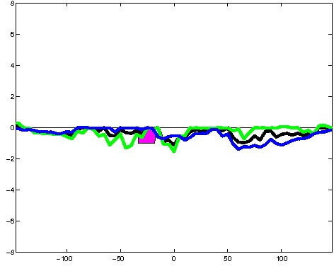
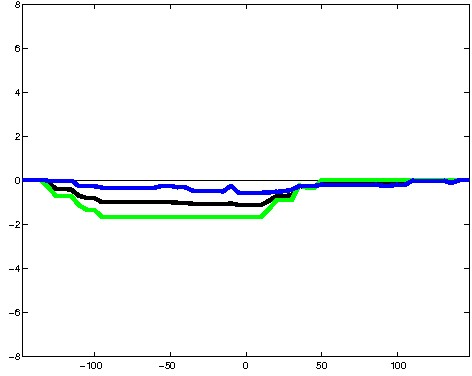
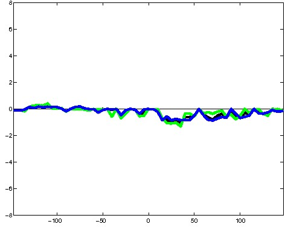

K562 Repressive DNase matched - State 23:Low (n=5)
K562 Repressive DNase matched - State 23:Low (n=5)
[
See group descriptions
]



; picked in K562 (state 23:Low, DNase); matched; chr3:128,067,549-128,067,843 (295bp)") 





; picked in K562 (state 23:Low, DNase); matched; chr4:26,580,729-26,581,023 (295bp)")